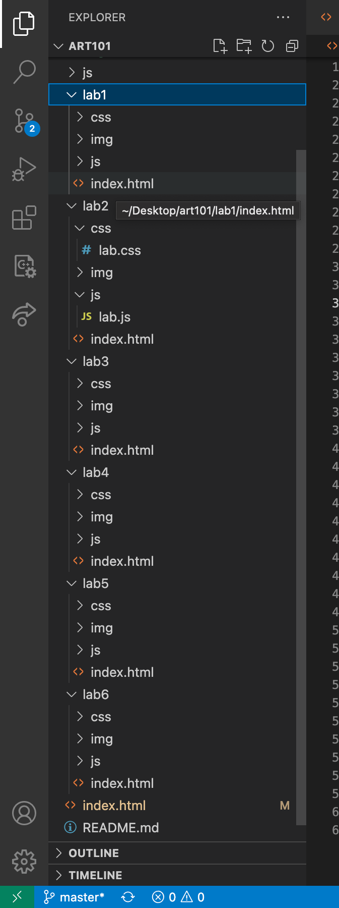
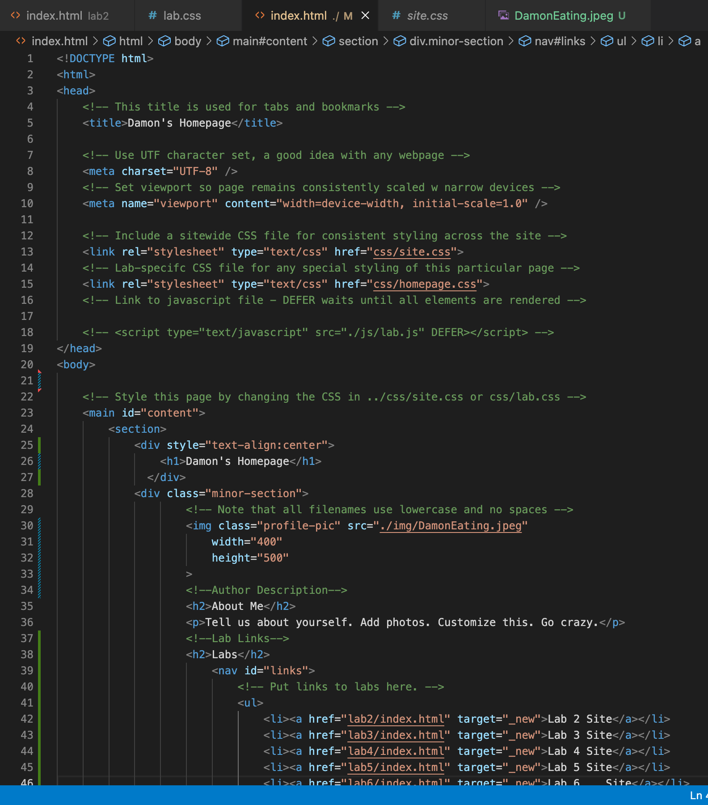
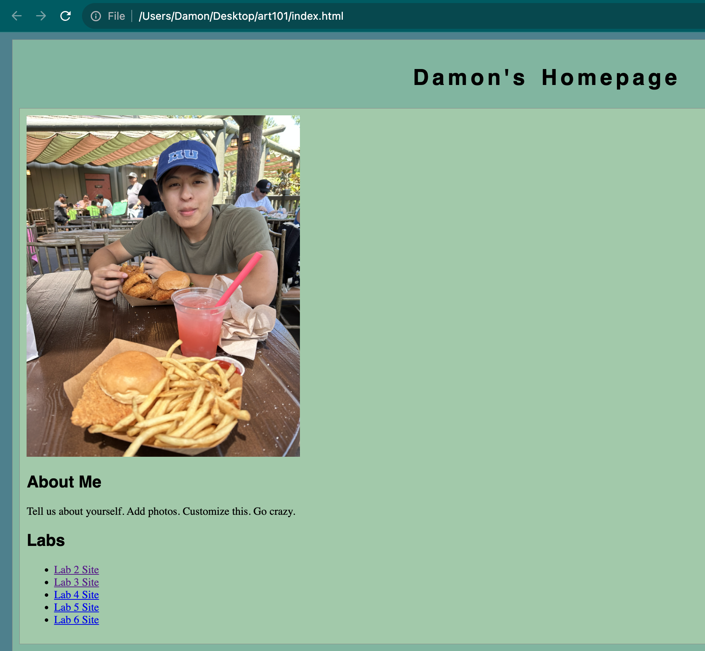
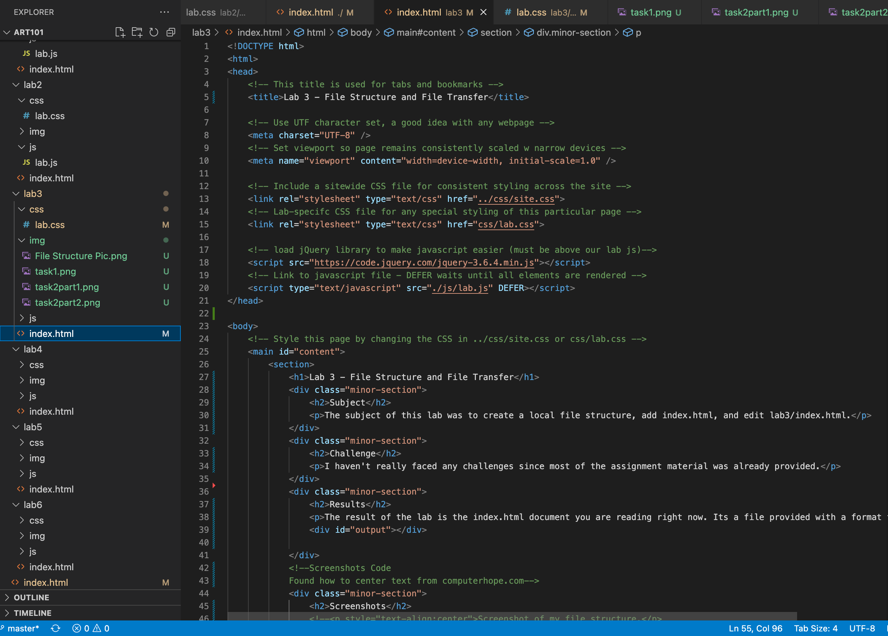
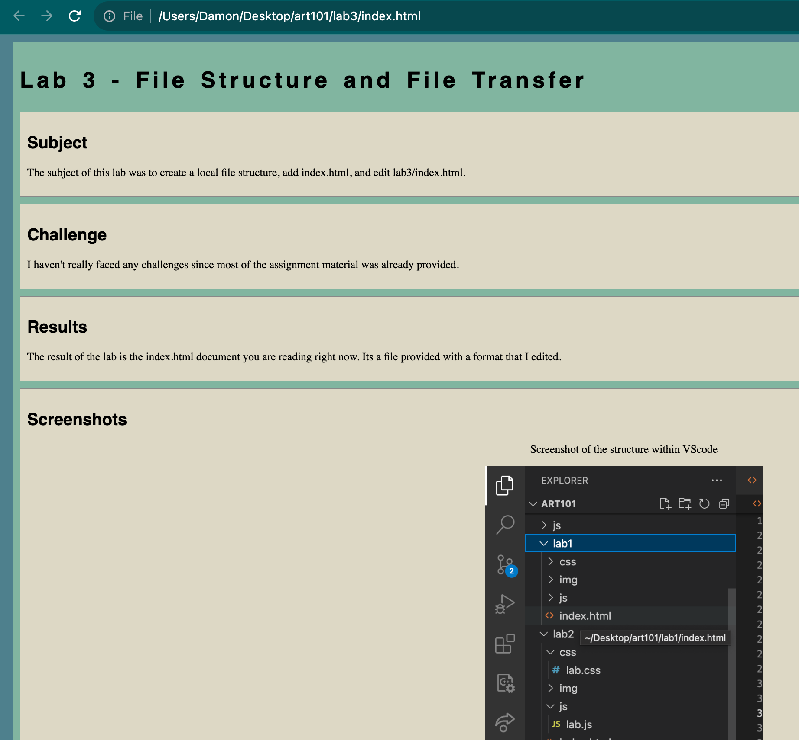

Lab 3 - File Structure and File Transfer
Subject
The subject of this lab was to create a local file structure, add index.html, and edit lab3/index.html.
Challenge
I haven't really faced any challenges since most of the assignment material was already provided.
Results
The result of the lab is the index.html document you are reading right now. Its a file provided with a format that I edited.
Screenshots
Screenshot of the structure within VScode
Screenshot of art101.index.html in VSCode
Screenshot of art101.index.html as seen in browser
Screenshot of art101/lab3/index.html in VSCode
Screenshot of art101/lab3/index.html as seen in browser
